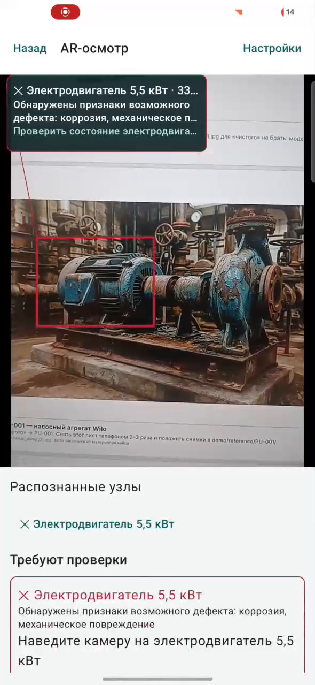

AR-помощник инженера по осмотру промышленного оборудования
Навёл камеру — узлы, требующие внимания, подсвечены: с причиной и рекомендуемым действием.
Без интернетаДанные остаются в сети предприятия
Андрейбэкенд, данные, расчёт ресурса
Павелмобильное приложение и AR
ТимофейИИ и компьютерное зрение
1 · Задача
Вся информация об узле — у самого узла
Сейчас инженер самопределяет оборудованиеищет данные в документахосматривает на глазпишет результат отдельно
С Deffector — один телефон
1
Определил
QR-код, табличка, номер или фото — оборудование найдено
2
Открыл карточку
Состав, параметры с уставками, ресурс, история
3
Навёл камеру
ИИ находит узлы; метка — цвет, причина, что делать
4
Записал
Осмотр сразу в истории оборудования
Для кого: инженеры эксплуатации и сервиса — обходы, плановые осмотры, ТО.
Паспорта, регламенты и замеры — из материалов заказчика; учёт эксплуатации — демонстрационный.
Deffector · Кибер 1022
2 · Сценарий
10 шагов из ТЗ — подряд на телефоне
1
Камераприложение открывается на ней
2
ИдентификацияQR, номер, фото, вручную
3
Карточкасостав, параметры
4
Требуют проверкиузлы с причинами
5
Подсказка«Наведите камеру на …»
6
Визуальный анализпризнаки, категория
7
Сопоставлениесроки, параметры, история
8
AR-меткицветные рамки с причинами
9
Карточка узласрок службы, действие
10
Запись работпроверено, дефект, ТО, замена
Живой показ — Павел. Телефон и сервер на ПК, мобильные данные выключены. Запасной вариант — видео.
Справа — снимок экрана телефона на стенде, настоящий ИИ.

3 · Архитектура
Всё в локальной сети — данные не уходят наружу
Локальная сеть предприятия · без выхода в интернет
Телефон инженера
Камера, QR и текст — на устройстве, AR-метки, формы осмотра
Wi-Fi · HTTP
Бэкенд
Карточки в базе, расчёт ресурса, уставки, привязка рамок к узлам
один ПК
ИИ-сервис
Детектор узлов, мультимодальная модель, поиск по фото — локально
OWLv2 baseдетектор: узлы по текстовым названиям, без разметки
Qwen2.5-VL 7Bпризнаки и объяснение, через Ollama
CLIP ViT-B/32идентификация по эталонным фото
Стенд: один ПК с Windows и видеокартой, запуск одной командойТелефон в той же сети Wi-Fi
Deffector · Кибер 1025
5 · ИИ-анализ
ИИ находит видимое — и честно говорит, чего не знает
ИИ · несколько раз в секунду
Узлы в кадре
Рамка, тип узла и уверенность
Бэкенд
Привязка к карточке
Подходит несколько узлов — выбирает инженер
ИИ · по нажатию
Анализ узла
Признаки, объяснение, рекомендация, уверенность
✓ Видимых проблем не обнаруженовсегда с оговоркой: это не подтверждает исправность
! Рекомендуется проверкасомнение, плохой снимок или сбой — никогда «всё в порядке»
✕ Обнаружены признаки возможного дефектакоррозия, подтёки, повреждение, перегрев двигателя
41 мсрамки: детектор
74 мсрамки: через сервер
1,6–1,8 санализ узла
≈ 7,8 ГБвидеопамять, три модели
Замеры на RTX 5070. Только видимое: внутренние неисправности не утверждаются. Уверенность анализа — оценка модели, не вероятность.
Модели предобученные, без дообучения.
Deffector · Кибер 1026
6 · Расчёт ресурса
Норматив, расчёт, факт — три раздельных блока
Норматив
Годы, моточасы, циклы, интервалы ТО — из документации заказчика
Расчёт
выработка = max(календарь, наработка, циклы)
от последней замены, иначе от установки
Факт
Что ИИ увидел на снимке. Не смешивается с расчётом: в норме по сроку, но с коррозией — и наоборот
Узлы · демо-данные
порог 80 % ресурса
Подшипники двигателя20 600 из 20 000 ч
Наступил срок замены
Торцевое уплотнение89 % · замена на ревизии 15 000 ч
Приближается срок замены
Рабочее колесов документации — «по состоянию»
Недостаточно данных
Порог «приближается» — 80 % ресурса или 30 дней до ТО. Нет норматива — пишем «недостаточно данных», ресурс не придумываем.
Deffector · Кибер 1027
7 · Соответствие ТЗ
Как закрываем каждый пункт ТЗ
4.1
Идентификация
QR, маркировка, номер, фото, ручной выбор
4.2
ИИ-анализ
4 типа узлов, 4 вида признаков, 3 категории ТЗ, привязка к карточке
4.3
Ресурс
Норматив, расчёт и факт раздельно; явная нехватка данных
4.4
AR-визуализация
Рамки поверх камеры, причина и действие в метке, нажатие → карточка узла
4.5
Цифровой двойник
Wilo CronoLine-IL и AMS PCP60S12/3, 20 узлов и комплектующих
4.6
Регистрация осмотра
Проверено, дефект, замечание, обслуживание, замена → история
Раздел 3
Сценарий
Все 10 шагов подряд на телефоне
Без интернета
Локальная сеть
Работа подтверждена участниками, сохранена запись сценария
Матрица по каждому подпункту и чем он подтверждён — docs/coverage.md в репозитории.
Deffector · Кибер 1028
8 · Ограничения и риски
Что прототип не умеет — говорим прямо
Два образца оборудования
Нормативы и замеры — заказчика, не поток с датчиков; учёт эксплуатации — демо
4 типа узлов и 4 вида видимых признаков
Уверенность анализа не калибрована
Метки привязаны к кадру, а не к пространству
Нет входа пользователей и шифрования — сеть доверенная
Риск → что делаем
ИИ ошибается: блик, плохой свет, один узел принят за другой
Предварительный осмотр; сомнение → «рекомендуется проверка»; решает инженер
Ложное «видимых проблем не обнаружено»
Всегда оговорка; сбой ИИ никогда не даёт этот результат
Неполные данные в карточках
Пишем «недостаточно данных» и чего не хватает; ресурс не придумываем
Сервер недоступен
Понятная ошибка вместо зависания; введённое в форме остаётся, можно «Повторить»